Fichas de Animales y naturaleza – 5.º de primaria
28 recursos de Animales y naturaleza para 5.º de primaria, listos para imprimir: Bosque primario, Plantación, Florence Nightingale, Flor y más. Cada ficha muestra el nivel, el número de páginas y una vista previa, y enlaza directamente al producto en eduki.
28 recursos
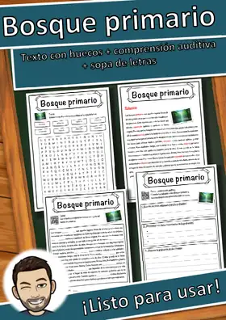
Bosque primario – Ficha: texto con huecos, comprensión auditiva y sopa de letras
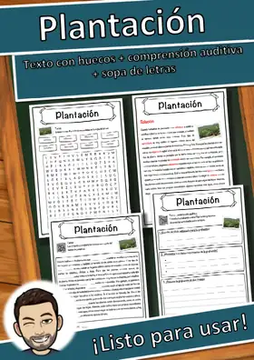
Plantación – Ficha: texto con huecos, comprensión auditiva y sopa de letras
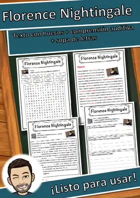
Florence Nightingale – Ficha: texto con huecos, comprensión auditiva y sopa de letras
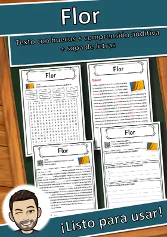
Flor – Ficha: texto con huecos, comprensión auditiva y sopa de letras
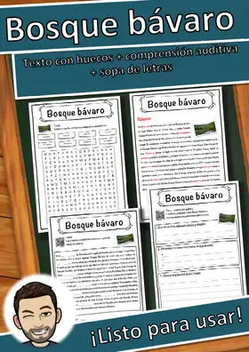
Bosque bávaro – Ficha: texto con huecos, comprensión auditiva y sopa de letras
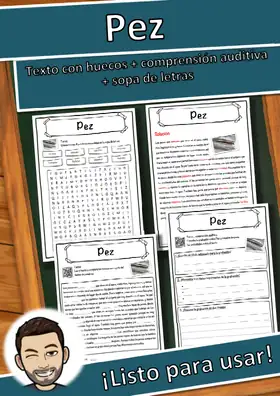
Pez – Ficha: texto con huecos, comprensión auditiva y sopa de letras
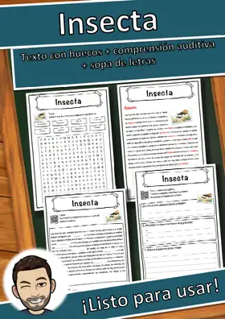
Insecta – Ficha: texto con huecos, comprensión auditiva y sopa de letras
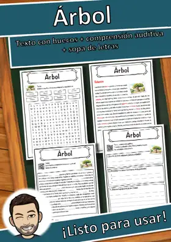
Árbol – Ficha: texto con huecos, comprensión auditiva y sopa de letras
Crueldad hacia los animales – Ficha: texto con huecos, comprensión auditiva y sopa de letras
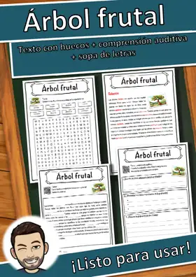
Árbol frutal – Ficha: texto con huecos, comprensión auditiva y sopa de letras
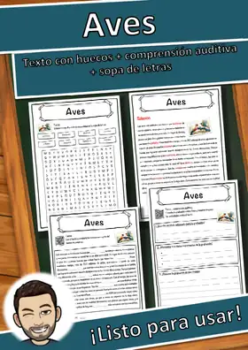
Aves – Ficha: texto con huecos, comprensión auditiva y sopa de letras
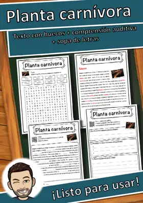
Planta carnívora – Ficha: texto con huecos, comprensión auditiva y sopa de letras
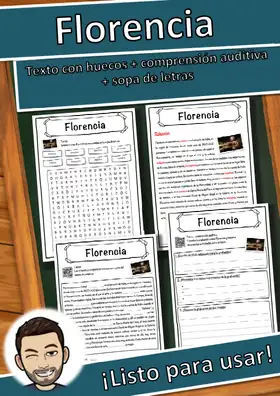
Florencia – Ficha: texto con huecos, comprensión auditiva y sopa de letras
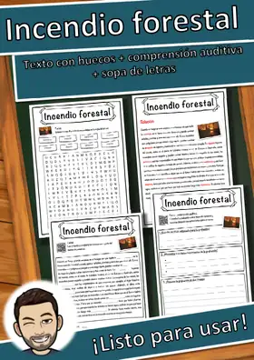
Incendio forestal – Ficha: texto con huecos, comprensión auditiva y sopa de letras
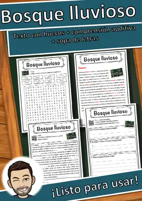
Bosque lluvioso – Ficha: texto con huecos, comprensión auditiva y sopa de letras
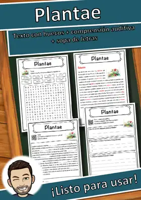
Plantae – Ficha: texto con huecos, comprensión auditiva y sopa de letras
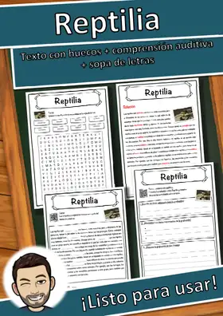
Reptilia – Ficha: texto con huecos, comprensión auditiva y sopa de letras
Migración de las aves – Ficha: texto con huecos, comprensión auditiva y sopa de letras
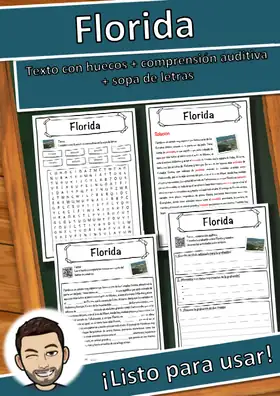
Florida – Ficha: texto con huecos, comprensión auditiva y sopa de letras
Distrito de Dahme-Bosque del Spree – Ficha: texto con huecos, comprensión auditiva y sopa de letras
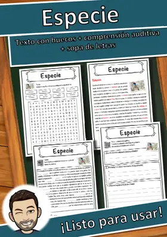
Especie – Ficha: texto con huecos, comprensión auditiva y sopa de letras
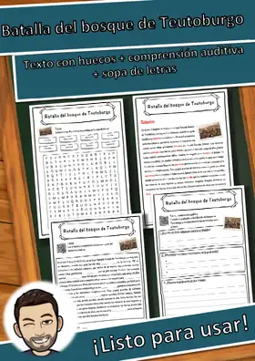
Batalla del bosque de Teutoburgo – Ficha: texto con huecos, comprensión auditiva y sopa de letras
Adiestramiento de animales – Ficha: texto con huecos, comprensión auditiva y sopa de letras
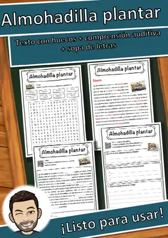
Almohadilla plantar – Ficha: texto con huecos, comprensión auditiva y sopa de letras
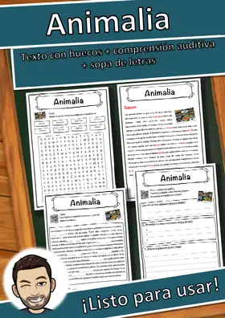
Animalia – Ficha: texto con huecos, comprensión auditiva y sopa de letras
Ficha de álamo (Árbol/árboles)
Ficha de álamo (Árbol/árboles)
Ficha de abedul (Árbol/árboles)
Ficha de abedul (Árbol/árboles)
Paquete de materiales perfiles forestales árbol caducifolio / conífera
Paquete de materiales perfiles forestales árbol caducifolio / conífera
No se encontraron recursos. Prueba con otra palabra o con otro filtro.